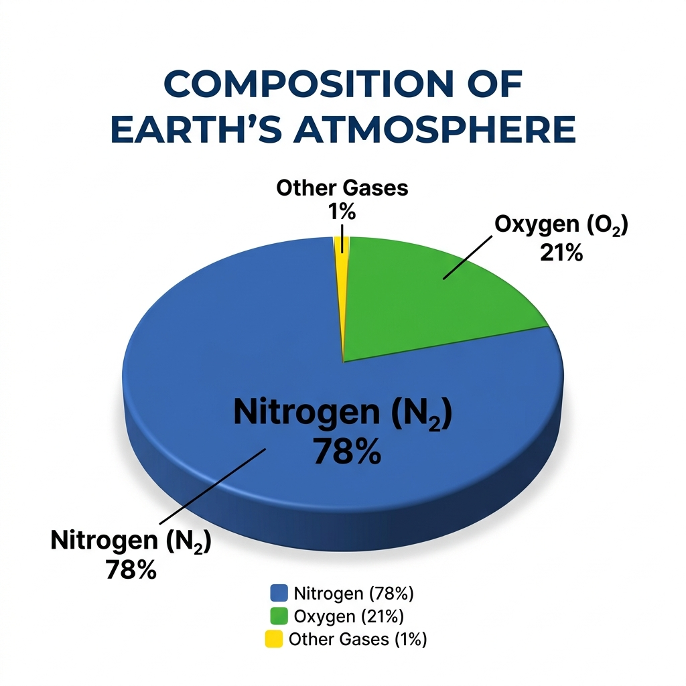
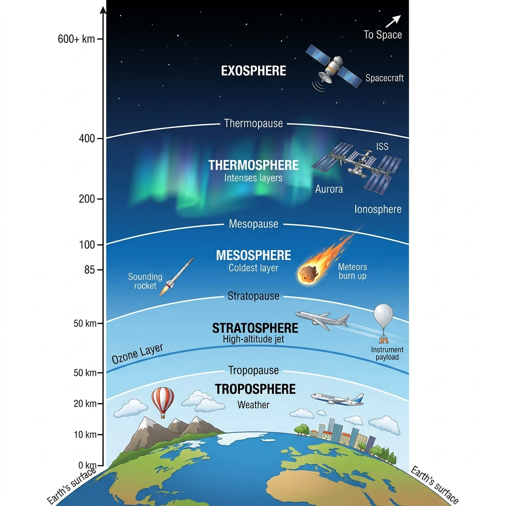

The atmosphere is a blanket of air that surrounds the Earth. It is held in place by the Earth's gravity. It protects life on Earth by absorbing harmful solar radiation, regulating the Earth's temperature by trapping the Sun's energy, and reducing extreme temperature differences between day and night.
Composition of the Atmosphere:

The atmosphere is divided into five main layers based on changes in temperature and altitude:

The four main seasons of India are:
We do not feel the immense pressure of the atmosphere because our bodies exert an equal outward pressure. The fluids and gases inside our bodies push outward with the exact same force that the atmospheric air pushes inward. Because these forces are in equilibrium (balanced), our bodies are not crushed, and we do not feel the weight of the air.
Aeroplanes generally fly in the lower part of the Stratosphere (or the upper Troposphere).
Why: The stratosphere is almost completely free from clouds and associated weather phenomena (like storms and turbulence). This provides smooth and ideal flying conditions. Additionally, the air is much thinner at this altitude, which offers less air resistance, significantly improving fuel efficiency.
| Troposphere | Stratosphere |
|---|---|
| The lowest layer of the atmosphere (up to 13 km average height). | Lies above the troposphere, extending up to 50 km. |
| Contains most of the atmosphere's mass and water vapour. All weather phenomena (clouds, rain) occur here. | Almost free from clouds and weather phenomena, making it ideal for flying aeroplanes. |
| Temperature decreases with increasing altitude. | Temperature increases with altitude due to the presence of the ozone layer absorbing UV rays. |
| South-West Monsoon (Advancing Monsoon) | North-East Monsoon (Retreating Monsoon) |
|---|---|
| Blows from the sea (Indian Ocean) to the land from June to September. | Blows from the land to the sea during October and November. |
| Carries abundant moisture and brings heavy widespread rainfall across most of India. | Carries very little moisture as it originates over land. |
| The winds travel in a south-westerly direction. | Brings rainfall primarily to the south-eastern coast (Tamil Nadu) after picking up moisture from the Bay of Bengal. |
(Latitude increases as you move away from the Equator (0°). Order from closest to furthest:)
a. Two stations with the most extreme climate:
Leh and Jodhpur (or Delhi). Leh has the highest temperature range (from -8.5°C in Jan to 17.2°C in Jul). Jodhpur and Delhi also experience extreme summers and harsh winters compared to coastal areas.
b. Two stations influenced by retreating monsoons:
Chennai and Thiruvananthapuram. Both experience high rainfall during October, November, and December.
c. The two hottest stations in the months of:
(i) February: Thiruvananthapuram (27.3°C) and Chennai (25.7°C).
(ii) June: Jodhpur (33.9°C) and Delhi (33.3°C).
a. Why does Shillong experience more rainfall than Kolkata?
Shillong is located on the windward side of the Khasi hills in Meghalaya at a high altitude. This mountainous relief forces the moisture-laden South-West monsoon winds from the Bay of Bengal to rise, cool, and precipitate heavily (orographic rainfall). Kolkata lies in the flat plains; while it receives rain as the monsoon branch passes over, it lacks the mountain barriers to force such intense, concentrated rainfall.
b. Why does Delhi receive more rainfall than Jodhpur?
Delhi receives its rainfall primarily from the Bay of Bengal branch of the monsoon, which travels up the Ganges valley. By the time this branch reaches Jodhpur (further west in Rajasthan), it has exhausted almost all of its moisture. The Arabian Sea branch passes parallel to the Aravalli range near Jodhpur, providing very little rain as there is no mountain barrier to intercept the winds.
a. Thiruvananthapuram has an equable climate?
Because of its close proximity to the equator and its coastal location along the Arabian Sea. The sea has a moderating (maritime) influence, preventing the temperatures from getting too hot in the summer or too cold in the winter.
b. Chennai has more rainfall only after the fury of the monsoon is over in most parts of the country?
Chennai lies on the Coromandel coast, which runs parallel to the South-West monsoon winds (Bay of Bengal branch) and sits in the rain shadow of the Western Ghats for the Arabian Sea branch. Therefore, it stays mostly dry during the summer. It receives the bulk of its rainfall during winter from the retreating North-East monsoons, which pick up moisture as they blow over the Bay of Bengal towards the coast.
c. Leh has moderate precipitation almost throughout the year?
Leh is located at a very high altitude in the Himalayas and functions as a cold desert. It lies entirely in the rain shadow of the Himalayan ranges, isolating it from the South-West monsoon. Its very sparse and moderate precipitation occurs primarily as snow during the winter months, brought in by western disturbances.
Yes. Despite vast regional variations in temperature extremes and the total amount of rainfall, the overarching rhythm of the seasons is primarily dictated by the monsoon. The entire country eagerly anticipates the arrival of the rains, as the bulk of rainfall everywhere (except for a few areas) occurs between June and September. This unifying seasonal rhythm shapes the agricultural calendar, cultural festivals, economy, and the daily lifestyle of people across all diverse regions of India.
(This is an observation activity, but here is the analysis:)
Yes, housing and clothing in India strongly reflect local climatic and relief conditions: